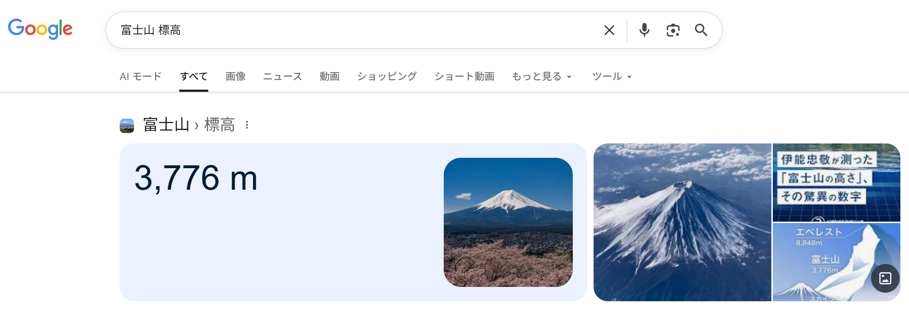
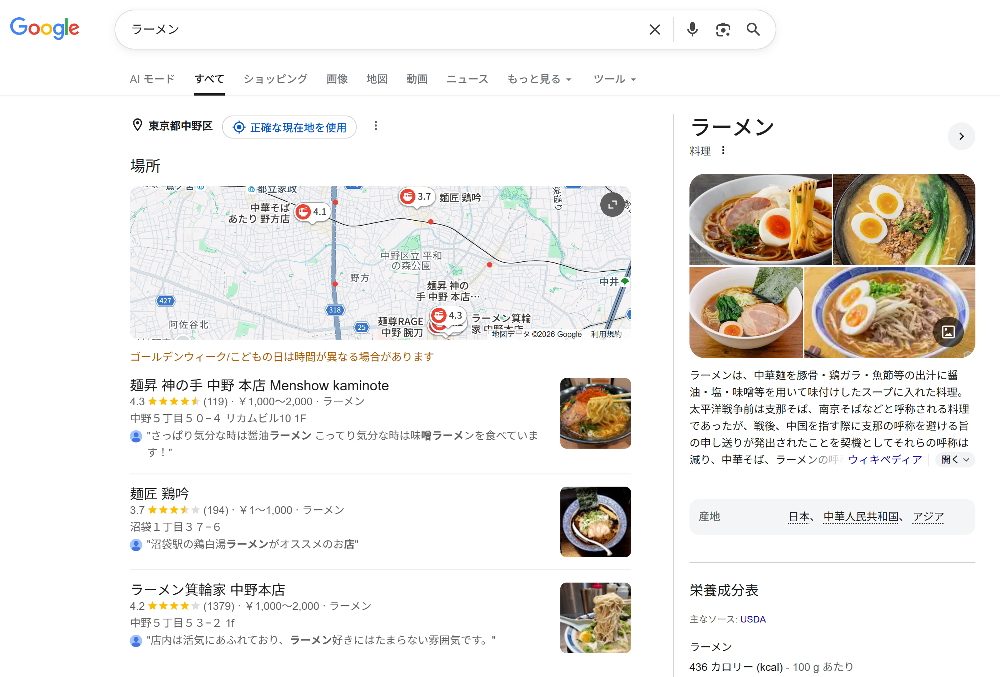
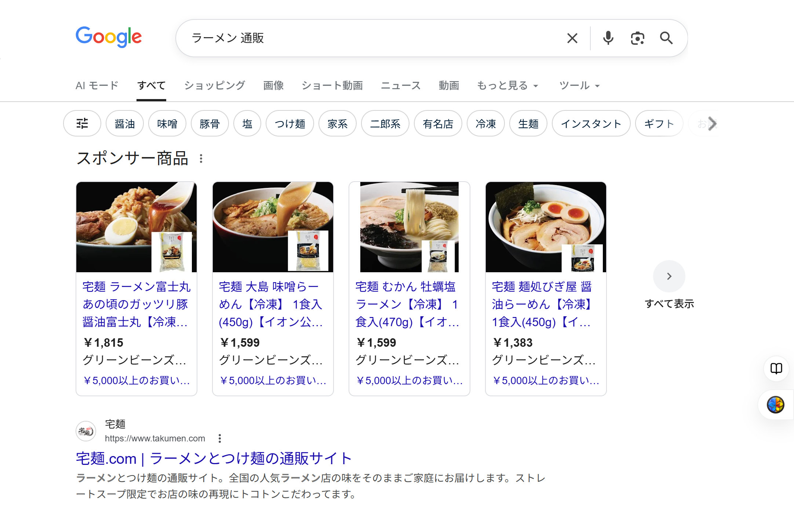

🕒 学習目安 約18分
キーワード戦略
調査：検索キーワード、検索意図、市場調査、設計：トピック設計、分析：競合分析
3 / 8
検索意図をキーワード調査に活かす
第2章で学んだ検索意図（Know・Do・Go・Buy）の考え方は、キーワード調査の段階でも重要です。同じ検索ボリュームのキーワードでも、検索意図が異なれば用意すべきコンテンツは変わります。
| キーワード例 | 推定される検索意図 | 用意すべきコンテンツの方向性 |
|---|---|---|
| 「SEO とは」 | Know（知りたい） | 基礎知識を解説する記事 |
| 「SEO 対策 やり方」 | Do（したい） | 手順を示すハウツー記事 |
| 「SEO ツール 比較」 | Buyに近いDo | 比較・検討を助けるコンテンツ |
💡
Point
キーワード単体の検索ボリュームだけでなく、「そのキーワードで検索する人が本当は何を求めているか」を合わせて考えることで、狙うべきコンテンツの形が明確になります。

図：Know（知りたい）意図の「富士山 標高」では、答えを端的に示すナレッジパネルが表示される

図：Go（近くで探したい）意図の「ラーメン」では、地図と店舗一覧が表示される

図：Buy（買いたい）意図の「ラーメン 通販」では、ショッピング広告や通販サイトが上位に表示される